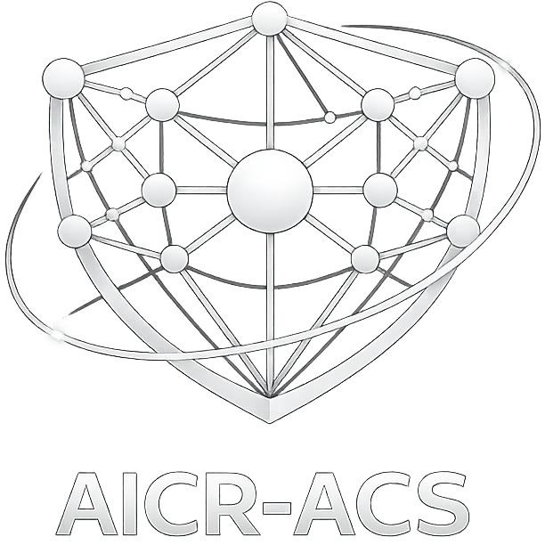

A forum for researchers and practitioners advancing autonomous, self-protecting cyber-physical systems — where AI-driven security is a first-class autonomic property.
AICR-ACS focuses on cybersecurity as an autonomic capability integrated within self-adaptive control architectures for cyber-physical systems.
Autonomous cyber-physical systems (CPS) increasingly operate in adversarial and highly dynamic environments — including industrial control systems, smart energy infrastructures, transportation systems, and distributed edge-cloud platforms. As these systems integrate AI components and autonomic control mechanisms, cybersecurity must evolve from static protection toward runtime autonomous defense.
Unlike traditional cybersecurity research focused on detection algorithms or cryptographic protocols in isolation, AICR-ACS emphasizes security as an autonomic capability: the integration of threat detection, decision-making, and mitigation within self-adaptive control loops (e.g., MAPE-K). The goal is to design systems capable of continuously monitoring their security posture, reasoning about threats, and autonomously adapting their configuration or behavior to maintain operational guarantees.
The workshop differs from generic AI for security venues, which often concentrate on the development and evaluation of detection models, adversarial robustness techniques, or threat classification algorithms. Indeed, AICR-ACS emphasizes the integration of AI-driven security mechanisms within autonomic control architectures. The focus is not limited to improving detection accuracy, but rather to designing systems capable of closed-loop, runtime security adaptation, where monitoring, analysis, planning, and execution are coordinated to maintain system-level guarantees under attack.
Similarly, it differs from classical CPS security workshops by moving beyond static vulnerability analysis or attack modeling. The emphasis is on self-protecting and self-healing CPS, including runtime adaptation, distributed coordination of defenses, and cryptographic agility in long-lived infrastructures.
The workshop also addresses forward-looking challenges, including:
We welcome original research contributions on, but not limited to, the following topics:
All submissions must be formatted according to the standard IEEE Computer Society Press proceedings style guide. Papers are submitted in PDF format via EasyChair, by selecting the track “AICR-ACS-Workshop”.
Accepted papers will be published in the ACSOS 2026 Companion volume and submitted for inclusion in IEEE Xplore.
As per standard IEEE policies, all submissions must be original and not previously published in any conference proceedings, book, or journal, and not currently under review for another archival venue. Please review IEEE’s policies on plagiarism and self-plagiarism.
As per IEEE guidelines, the use of AI-generated content in a submission (including text, figures, images, and code) must be disclosed in the acknowledgments section.
Accepted papers will be published in the ACSOS 2026 workshop proceedings and submitted for inclusion in IEEE Xplore. Papers must follow the IEEE conference format and must not exceed 6 pages.
We are currently coordinating a special issue with relevant journals. Authors of selected high-quality papers will be invited to submit extended versions of their work.